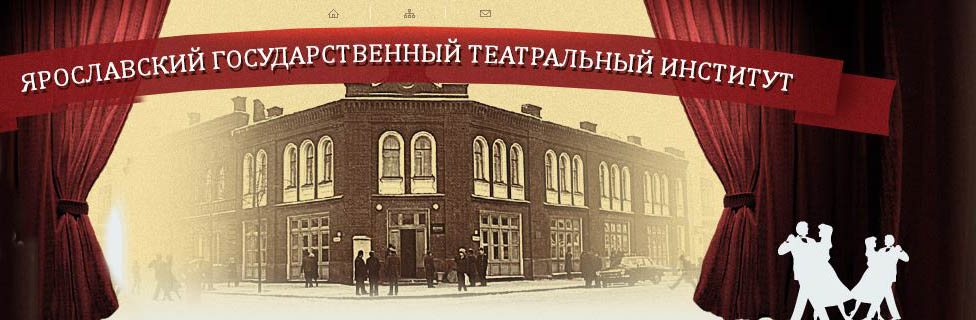
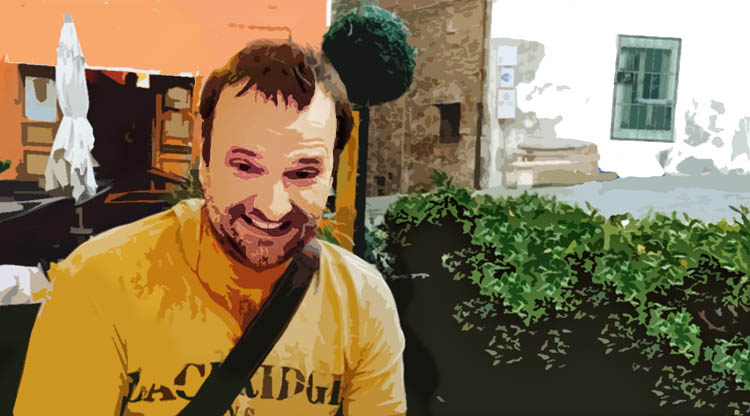
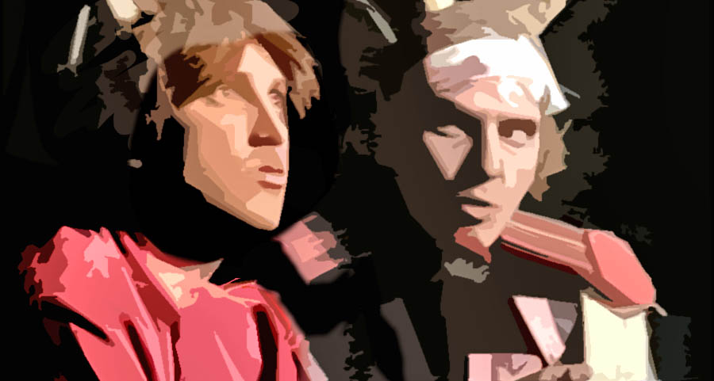

БОГ не ДАЛ МНЕ бросить ТЕАТРАЛЬНЫЙ институт
"Я ничего не играю специально, ничего не изображаю. Я просто действую согласно своей природе..."
Эфраим Калиш: на мой взгляд актер – это больше диагноз, чем профессия. Ты согласишься с такой постановкой вопроса?
Сергей Лукьянов: Размышляю над этой мыслью и сталкиваюсь с разными мнениями, когда люди говорят мне, что я что-то играю, или что-то изображаю. Иногда я проповедую и мне говорят: «Ты переиграл...» или «Слишком много изображал...» И я никогда не мог понять – где я играл, что изображал? Потому что я ничего не играю специально, ничего не изображаю. Я просто действую согласно своей природе, в том как я это делаю. И я понял, что это диагноз. Я е говорю, что в жизни надо играть и т.п. Ведь я не играю в жизни, не прикидываюсь, ничего исскусственного не делаю. Но даже, когда начинаю рассказывать, вдруг это становится людям интересно, хотя я специально не стремился как-то особо рассказывать. Мне кажется, просто такова моя природа. Уж я за нее и каялся и исповедовался и говорил, что я буду серьезнее и буду делать это в соответствии с тем, как полагается, в том, что называется благочинным. Есть традиционное понимание благочиния. Я понимаю это так, что это самое «благочиние» не всегда совпадает с Божьим мнением.
Эфраим Калиш: Может быть речь идет о том, что каждый призван служить Богу теми способностями, которые даровал ему Творец?
Сергей Лукьянов: Наверное все таки мне легче двигаться в том, что более органично лично для тебя, в том даре, который тебе уделен.
Если человек начинает умничать на основании тех книг, которые он не читал, то он выглядит глупо. Точно также и с актерством. Либо оно есть, либо его нет.
Эфраим Калиш: Ты мог бы рассказать о годах твоей учебы в театральном институте и твоем обращении к Творцу? Мне кажется такое свидетельство будет интересно и важно для всякого молодолго человека, который думает избрать для себ профессию актера, художника, музыканта...

Сергей Лукьянов: Я поступил в институт в 1990г. А до этого я смотрел по телевизору проповеди Джеймса Вагерта. Это был питерский канал, в семь утра. И джемис Вагерт произвел на меня огромное впечатление. Потому, что я не мог понять, откуда такая сила на этом человеке. Я знал, что это именно сила, я переживал ее вместе с моим братом. Мы вставали вдовоем рано утром в субботу, садились на пол, завернувшись в одеяла, смотрели Джемиса Вагерта и плакали. И что-то внутри меня говорило: «Вот это сила! Как он вообще это может». Я думал – вот он артитст, вот дает! Я не понимал, о чем он проповедует, я даже не знал, что это называется проповедь. Я понимал отдельные слова, но не понимал их смысла. Ничего не понимал. А какая-то невероятная сила воздействовала на нас, так что мы с братом рыдали и не могли остановиться. И так мы проводили следующую субботу раз за разом.
И я думаю, что его проповеди, которые я не понимал, как бы заложили такую «бомбу» в мою театральную карьеру. Потому, что я мечтал быть только актером. Я мечтал быть актером, потому, что мне было легче так себя выражать. Мне хотелось влиять на людей, что-то позитивное, положительное привнести в их жизнь, чтобы жизнь их изменилась.
А Джемис Вагерт как будто разрушил все. Было такое ощущение, что ты изобретаеш ь велосипед. Вот у же придумал, как соединить колеса с педалями и тут над тобой пролетает реактивный самолет. И ты понимешь, что занимаешься глупостью, что все технологии уже давно ушли вперед. А ты все еще тут изобретаешь нечто, что уже давно устарело.
И потом, когда я поступил в Ярославский Театральный Институт, дух богоискания еще больше меня захватил. Со временем мне попался Новый Завет. Я начал его читать. Не скажу, что я его понимал. Я понимал скорее всего только маральную часть.

Тогда была нищета в моей стране. Думаю, мы даже не осознавали ту бедность, в которой жили. Людей был мало по вечерам на улицах. Какие-то пустые коробки, бомжи, везде пьяные люди валялись по всем углам, как будто отбомбились фашисты , а раненных не унесли. Такая была серая, серая депрессионная атмосфера. Я помню, как часто выходил на набережную Волги часов в двенадцать ночи и просто орал: «Бог, если ТЫ есть, пожалуйста как-то откройся мне». Я верил, на самом деле верил, что Он откроется мне. Мне казалось, что Он пешком по волге ко мне придет. Как в Библии Он ходил по воде. Но этого не произошло.
Через некоторое время одна девушка из нашего института (двумя курсами старше меня), будучи в Казани пережила встречу с Богом и рождение свыше, крещение Духом Святым.
Она вернулась и говорит: «Сережа, я получила крещение Духом Святым!» И до четырех утра она мне свидетельствовала и я от нее сбежал.
Я сбежал от нее потому, что она меня раздражала. Ведь он получила крещение Духом Святым, при этом никогда не читая никакой религиозной литературы, никогда не молилась, была мирской – примерской. И вдруг Бог крестит ее Духом Святым. А я, как идиот каждый день занимаюсь медитацией по четыре часа, пощусь по системе Сергия Радонежского, отказался от мяса, тысяча пятьсот раз в день молюсь «Господи, помилуй мя грешнаго». И не ответа, ни привета от Бога. И я от нее убежал. И сказал: «Бог, я не хочу иметь с Тобой ничего общего! Я всегда знал, что Ты лицеприятен!». Вобщем я с Богом поругался.
А на следующее утро я проснулся с такой жаждой Бога, что думал, меня разорвет. И я пошел в церковь. Мы нашли в Ярославле церковь. И там Бог меня просто физически обнял. Я пережил и Ним такую встречу, что этого не ожидал. Помню только начало служения, а дальше все, что я помню – Бога. Я оказался в Его любви. Я думал, что меня раздавит Его любовь. Я плакал так, как маленькие дети, когда подбородок трясется. Я не мог взять над собой контроль от Его любви.
И я понял ради чего стоит жить, что Иисус – это реальность. Что Бог – живой. И я понял, что могу промочь людям, открыть для них Иисуса только через проповедь. Я думал, что как актер я это уже не смогу делать потому, что «похть очей, похоть плоти и гордость житейская» - три этих кита, на которых в принципе, очень многие люди строят свою судьбу, эти киты уплыли из под моих ног. Я более не мог на них опереться. И поэтому я думал, что вообще не стану доучиваться на актера. Но Бог не позволял мне покинуть институт. Он хотел, чтобы я доучился. И многи люди начали говорить: «Теперь ты стал религиозным. У тебя на устах только «алиллуйя» и «аминь», ты, как актер теперь просто – проф. непригоден!»
Эфраим Калиш: А как Бог не давал тебе бросить институт?
Сергей Лукьянов: Внутри я ощущал силу, которая говорила: «Тебе не надо бросать». Он меня как бы удерживал. Я не знал, что это Бог. Но я чувствовал, что я не должен этого делать, я совершу ошибку, если оставлю учебу. Вроде бы мой ум говорил мне: «Тебе надо бросить, ты все равно уже не будешь актером, а Бог не хотел этого».

.Бывает такой, я бы сказал, религиозный штурм мозгов. Когда тебе говорят оставить мир, отречься от него. И эти религиозхные побуждения не являются истиной. Истиной является только то, что Бог говорит человеку. А эти религиозные «подвиги» - бросить мир, уйти куда-то от мира и т.п., - часто не мотивированы истиной, или любовью Иисуса. А просто какими-то религиозными вещами. Поэтому Бог очень хотел, чтобы я доучился. И через то, что я учился люди продолжали спасаться в институте.
Мало того, Бог меня начал учить, как вообще в актерском ремесле двигаться в силе Святого Духа. Он во многом меня изменил, изменил отношение к творчество. Потому что с издревле считалось в православной и вообще христианской традиции, что актерство или лицедейство – это грех и лицемерие. Но сегодня я не просто убежден, что актерское мастерство – это одно из проявлений творческой энергии Бога Отца, как и песни, танцы, театр, кино. Это одно из проявлений творческой силы Небесного Отца, который является «паталогическим» Творцом, который не может не творить, который постоянно в игре.
Эфраим Калиш: И, тем не менее, тебе было сказано, что ты проф. непригоден.
Сергей Лукьянов: Да. Мне сказали: «Театр – это храм, а актер – священник. Либо священнодействуй, либо убирайся!» В принципе, я был готов убраться, но Бог не позволял мне от туда убраться. И даже, когда меня решили выгнать, потому что считали, что я разлагаю институт, народный артист Тихонов заступился за меня и сказал: «Не надо этого парня выгонять из за того, что он верующий».
А потом началось интересное, потому что Бог стал помогать мне в актерском мастерстве. Он начал давать мне советы. Я помню, у нас был экзамен по литературе и мы должны были читать Пушкина. Надо было выбрать большой отрывок. И все выбирали сюжетные, драматические произведения. И вдруг очень ясно Бог сказал мне: «Прочитай стихъотворение «Времена года»: Унылая пора, очей очарование...». Я сказал: «Но Господь, как ты прославишься через это стихотворение? Там о природе, о погоде...». Он сказал: «Я прославлюсь через это стихотворение! Сделай его!» Я много над ним работал и ничего не получалось. Т.е. то, как я читал, не удовлетворяло меня. Я как будто не мог захватить его.
И когда пришло время мне выступать перед людьми, моя преподавательица сказала мне: «Сергей, я тебя поставлю последним». Это означало, что она считает, что я сделаю это лучше всех. Самое лучщее обычно оставляют на конец. Она верила, что я сделаю это лучше всех. А я не особо в себя верил, потому что у меня не было ни одной удачной попытки за время всех репетиций. И когда уже был мой выход, я просто поклонялся Богу в кроридоре. Но когда я вышел перед аудиторией. На меня сошел Дух Святой. Как будто я проповедую проповедь. Хотя это был Пушкин, а не проповедь. Но Дух Святой сошел на меня и люди, которые у же полтора часа сидели и слушли стихи, уставшие и комиссия, и студенты, вдруг все протрезвели. И сила начала двигаться в этом стихотворении: люди плакали, смеялись, даже хватали друг друга за волосы и трясли от восторга. Когда я закончил читать, все выбежали в коридор. И та преподавательница, которая не любила меня за то, что я стал верующим и постоянно подкалывала меня и говорила, что теперь я религиозный, подбежала ко мне, замахнулась на меня своей дамской сумочкой и сказала: «Так бы и прибила тебя!». Из ее уст это был высший комплимент.
С того момента я как будто на другой уровень перешел. Я вдруг понял, что с Духом Святым, с Богом намного интереснее. Пережил Пушкина, как личность. Я влюбился в его поэзию через это стихотворение, через то, как Дух Святой мне открыл. Я увидел, что через Пушкина действует Тот же Господь. Ведь это Он дает таланты и дары. Я увидел – во всем, что есть самого лучшего в мире вдохновляющего человека, есть Бог. Даже, если этот человек не воцерковлен. Даже если его кто-то считате грешником. Бог намного выше, чем недостатки человека. И, может скажу крамолу, - Дух Святой не отталкивают наши грехи. Наоборот, очень часто они привлекают Духа Святого, чтобы помочь. Они привлекали Иисуса к Закхею, они привлекали Его к падшим людям. Он заходил к ним в дома и говорил, что «больные нуждаются во враче, а не здоровые». Я увидел, что есть огромная сила во многих вещах, которые только Бог мог открыть.
Потом были другие победы, когда я вдруг оказывался лучшим во всем институте на конкурсах. И я увидел, что с Богом актерское мастерство оживает и становится невероятно сильным. И вот теперь оно влияет, теперь оно производит плод который остается на всегда. Это не просто слезы, не просто какое-то поверхностное очищение. Это что-то намного сильнее и глубже.
Теперь для меня актер – абсолютно реабилитированная профессия перед Богом.